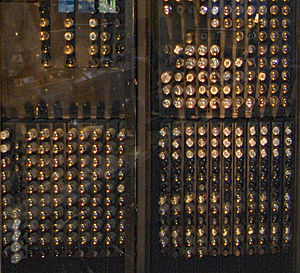
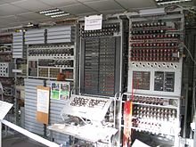
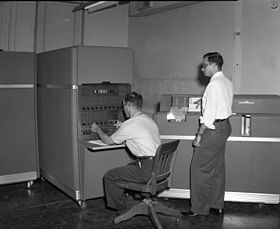
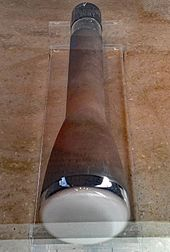
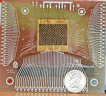
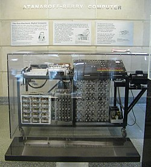

The 1946 ENIAC computer used 17,468 vacuum tubes

The 1946 ENIAC computer used 17,468 vacuum tubes

An IBM 650 at Texas A&M University.

Williams tube from an IBM 701 at the Computer History Museum

Magnetic-core memory, 18×24 bits, with a US quarter

Replica of the Atanasoff–Berry computer at Iowa State University